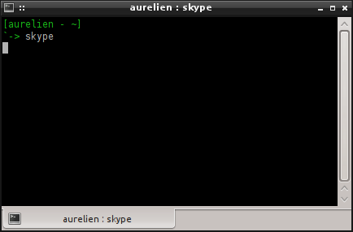
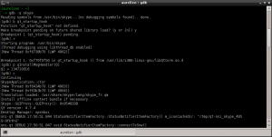

I already wrote some time ago about sni-qt, a Qt plugin which turns old-school systemtray icons from Qt applications into shiny StatusNotifierItem | AppIndicators.
Last week I was busy debugging a problem with Skype and sni-qt. To do so I added a runtime config option to enable debugging in sni-qt. It is quite efficient at flooding stderr with debug messages for all applications I have tried it on, except for Skype:

Disappointing! Come on Skype, talk to me!
I don't give up that easily, so I decided to fiddle around with gdb.
I first tried to start Skype from within gdb with the "start" function. This function causes gdb to set a temporary breakpoint on main() and start the program. This is quite handy because when your program reachs the breakpoint the application has not started yet, but most libraries (except dlopen-ed ones) are already loaded, making it easier to set breakpoints. No such luck with Skype: for some reason gdb didn't find the main() function and did not stop Skype at startup. Bummer.
Then I remembered I recently had a discussion about "qt_startup_hook()", a function which is called at the end of the QCoreApplication constructor. This is close enough from startup to me. I set up a breakpoint on "qt_startup_hook" and said gdb to run Skype. That worked! Cool.
Now, I am stopped inside Skype, what to do next? A not so well-known feature of Qt logging system lets you install your own message handler for logging functions with the qInstallMsgHandler(yourHandler) function. Your message handler then receives all the output from qDebug(), qWarn() and friends. To go back to the default message handler, just call "qInstallMsgHandler(0)". Not really confident in it, I tried to call qInstallMsgHandler(0) from within gdb. It turns out that did the trick: after calling resetting the message handler and asking gdb to continue, I got my error messages (plus Skype own debug messages, probably not a major achievement in reverse-engineering, but that was fun :))
Oh and by the way, if you run {,K}Ubuntu Oneiric on a 64bit machine and want to get your Skype icon turned into a StatusNotifierItem, be sure to install the i386 version of sni-qt (you can do so with "sudo apt-get install sni-qt:i386"). Skype still does not provide 64bit binaries :(
{kind=link}